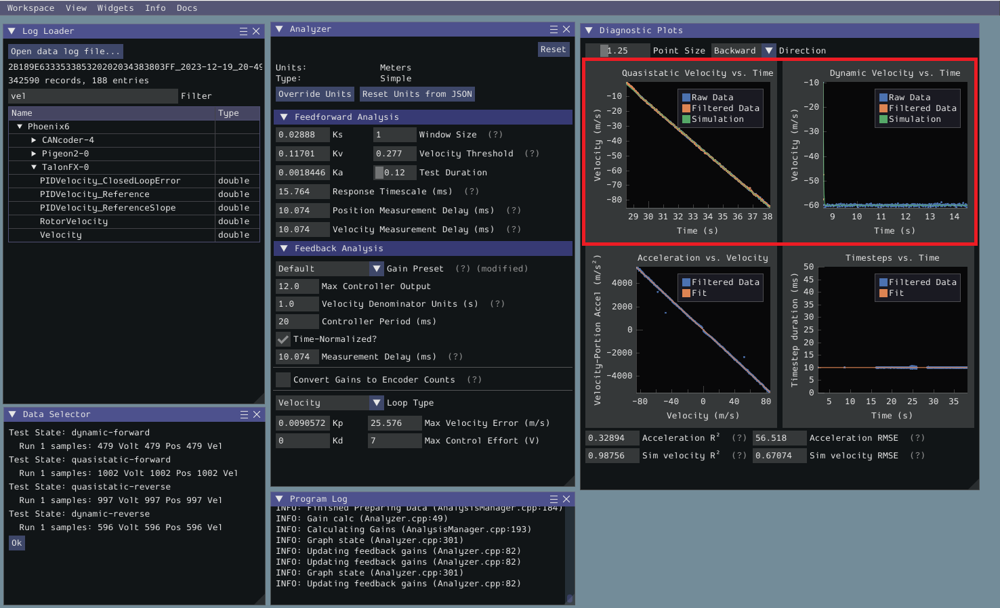

13.1 Characterizing with SysId#
Why it matters#
In Lesson 13 you guessed kG by slowly raising the voltage. That works for one term, but kS, kV, and kA are almost impossible to guess well. SysId (System Identification) measures them for you. It drives your mechanism through a few controlled tests, records voltage, position, and velocity, and fits the feedforward equation to that real data.
Good SysId numbers mean feedforward does most of the work, and PID only has to clean up small errors.
Read this#
- Introduction to System Identification
- Creating an Identification Routine
- Running the Identification Routine
- Loading Data and Viewing Diagnostics
Walkthrough#
The big picture#
SysId needs a real robot
Simulation already knows its own physics, so characterizing it tells you nothing new. Do Steps 1–2 in sim to make sure the code works, then run the real tests on the robot.
The four tests#
SysId runs two kinds of tests, each in both directions:
| Test | What the motor does | What it measures best |
|---|---|---|
| Quasistatic forward / reverse | Voltage ramps up slowly (default 1 V per second) | kS and kV: acceleration is near zero, so voltage is mostly fighting friction and speed |
| Dynamic forward / reverse | A sudden constant voltage step (default 7 V) | kA: the mechanism accelerates hard, so the extra voltage goes into acceleration |
Running both directions matters because friction and gravity act differently going up vs. down. That's how SysId separates kS from kG.
Step 1: Add a SysIdRoutine to your subsystem#
This example characterizes an arm. The same pattern works for an elevator, flywheel, or drivetrain.
import static edu.wpi.first.units.Units.*;
import edu.wpi.first.wpilibj.RobotController;
import edu.wpi.first.wpilibj2.command.Command;
import edu.wpi.first.wpilibj2.command.SubsystemBase;
import edu.wpi.first.wpilibj2.command.sysid.SysIdRoutine;
public class Arm extends SubsystemBase {
private final PWMSparkMax motor = new PWMSparkMax(1);
private final Encoder encoder = new Encoder(0, 1);
private final SysIdRoutine sysId = new SysIdRoutine(
// Test settings. Defaults are 1 V/s ramp, 7 V step, 10 s timeout.
// An arm needs a gentler step so it doesn't slam into its stops.
new SysIdRoutine.Config(
Volts.of(1).per(Second), // quasistatic ramp rate
Volts.of(4), // dynamic step voltage
Seconds.of(5) // safety timeout per test
),
new SysIdRoutine.Mechanism(
// How SysId drives the motor:
voltage -> motor.setVoltage(voltage.in(Volts)),
// What SysId records every loop:
log -> log.motor("arm")
.voltage(Volts.of(motor.get() * RobotController.getBatteryVoltage()))
.angularPosition(Radians.of(getAngleRadians()))
.angularVelocity(RadiansPerSecond.of(getVelocityRadPerSec())),
this
)
);
public Command sysIdQuasistatic(SysIdRoutine.Direction direction) {
return sysId.quasistatic(direction);
}
public Command sysIdDynamic(SysIdRoutine.Direction direction) {
return sysId.dynamic(direction);
}
// getAngleRadians() and getVelocityRadPerSec() come from your encoder,
// with 0 radians = arm horizontal (see Lesson 13).
}
Linear vs. angular
For an elevator or drivetrain, log .linearPosition(Meters.of(...)) and .linearVelocity(MetersPerSecond.of(...)) instead. Use the real units your mechanism moves in. SysId's gains come out in those same units.
Get the units right before testing
SysId gains are only as good as the position and velocity you log. Double-check your conversion factor from Lesson 8. If the logged angle is wrong, every gain will be wrong, and you'll have to redo all four tests.
Step 2: Bind the tests and run them#
In RobotContainer.java, put the tests on a separate controller (port 1) so a driver can't trigger them by accident:
private final CommandXboxController sysIdController = new CommandXboxController(1);
private void configureSysIdBindings() {
sysIdController.a().whileTrue(arm.sysIdQuasistatic(SysIdRoutine.Direction.kForward));
sysIdController.b().whileTrue(arm.sysIdQuasistatic(SysIdRoutine.Direction.kReverse));
sysIdController.x().whileTrue(arm.sysIdDynamic(SysIdRoutine.Direction.kForward));
sysIdController.y().whileTrue(arm.sysIdDynamic(SysIdRoutine.Direction.kReverse));
}
whileTrue is a safety feature: let go of the button and the motor stops.
Also make sure WPILib's data log is running, so the test data gets saved to a file. In Robot.java's constructor or robotInit():
DataLogManager.start();
Running the tests on the robot:
- Use a fully charged battery. A tired battery gives noisy data.
- Clear space. For an arm, start somewhere in the middle of its travel. For a drivetrain, put it on the floor with lots of room (not on blocks, since the wheels need real load).
- Enable in Teleop (or Test mode).
- Hold A (quasistatic forward). Let go before the mechanism hits a hard stop.
- Move the mechanism back to the start if needed, then hold B, X, and Y the same way.
- Disable the robot.
Be ready to let go
Dynamic tests jump straight to the step voltage. Hold the button with your thumb ready to lift, and keep everyone clear of the mechanism. For arms and elevators, consider adding .until(() -> atLimit()) to each test command as a backup.
Longer is better, until you hit the stop
Each test should run long enough to reach a fairly steady speed. A quasistatic test that lasts half a second doesn't have enough data. If your mechanism's travel is short, lower the ramp rate or step voltage so the test lasts longer before you have to stop.
Step 3: Get the log file#
WPILib logs are .wpilog files saved on the roboRIO (or a USB stick plugged into it).
- Connect to the robot.
- Open DataLogTool (installed with WPILib).
- Download the newest
.wpilogfile to your laptop.
Using vendor logging instead
CTRE's Phoenix 6 has its own SignalLogger that records .hoot files, and it can capture data faster and more precisely than WPILib's log. If your team uses it, follow CTRE's SysId guide and convert the .hoot file to .wpilog with Phoenix Tuner before Step 4. The analysis is identical.
Step 4: Analyze in the SysId tool#
- Open the SysId tool (in the WPILib tools folder, or Ctrl+Shift+P → WPILib: Start Tool → SysId).
- Open your
.wpilogfile. - In the Data Selector:
- Pick the test-state entry. It's named something like
sysid-test-state-arm. - Drag your logged position, velocity, and voltage entries into the matching slots.
- Set the units to match what you logged (radians for this arm).
- Click Load.
- Pick the test-state entry. It's named something like
-
In the Analyzer, set the mechanism type:
Mechanism Choose Gains you get Flywheel, roller, turret Simple kS, kV, kA Drivetrain Simple (characterize left and right sides) kS, kV, kA Elevator Elevator kS, kV, kA, kG Arm Arm kS, kV, kA, kG -
Read off the feedforward gains.
Step 5: Check the data before trusting it#
SysId always produces numbers, even from bad data. Before using them, look at the Diagnostics plots:

The SysId diagnostic plots (highlighted in red). From the WPILib docs, Viewing Diagnostics (CC BY 4.0).
- Fit quality: each plot should show the fitted line passing through the middle of the data points, not off to one side.
- Velocity vs. time: the quasistatic plots should rise smoothly. Jagged plots or big gaps mean a noisy sensor or a test that was too short.
- Sanity check the signs: kS, kV, and kA should all be positive. A negative gain almost always means a sensor is inverted relative to the motor, or the units are wrong.
Common problems
| Symptom | Usual cause |
|---|---|
| Negative kV or kA | Encoder direction doesn't match motor direction. Invert one of them. |
| Huge kG on an arm | Angle zero isn't horizontal |
| Wildly noisy plots | Test too short, dying battery, or a loose belt / chain |
| Gains change a lot between runs | Mechanism is binding or slipping. Fix the mechanical issue first. |
Step 6: Use the gains#
Copy the numbers into Constants.java and plug them into the feedforward from Lesson 13:
public static final class ArmConstants {
// From SysId, <date>, fresh battery
public static final double kS = 0.21; // volts
public static final double kG = 0.48; // volts
public static final double kV = 1.87; // volts per (rad/s)
public static final double kA = 0.06; // volts per (rad/s²)
}
private final ArmFeedforward ff = new ArmFeedforward(
ArmConstants.kS, ArmConstants.kG, ArmConstants.kV, ArmConstants.kA);
These example numbers are made up. Yours will be different.
SysId's analyzer can also suggest PID gains for a velocity or position loop. Treat them as a starting point, then fine-tune with the recipe in Lesson 12.
Re-run SysId when the mechanism changes
New gear ratio, added weight, a different motor? The old gains no longer describe the mechanism. Re-characterize it.
Try it#
- Add a
SysIdRoutineto your arm (or drivetrain) and confirm the four commands run in simulation without errors - With a mentor, run all four tests on the real robot
- Load the log in SysId and get kS, kV, kA (and kG if it applies)
- Check the diagnostics: are all gains positive? Does the fit look good?
- Put the gains in your feedforward and compare tracking to your hand-tuned version from Lesson 13
Check yourself#
Why does SysId run both quasistatic and dynamic tests?
Quasistatic tests have almost no acceleration, so they isolate kS and kV. Dynamic tests accelerate hard, which reveals kA.
Why run each test in both directions?
Friction always opposes motion while gravity always pulls down. Comparing forward and reverse lets SysId separate kS from kG.
SysId gives you a negative kV. What's probably wrong?
The sensor direction doesn't match the motor direction (or the logged units are wrong). Fix the inversion and re-run the tests.
Why bind the tests with whileTrue on a separate controller?
Releasing the button stops the motor immediately, and a separate controller keeps a driver from triggering a test by accident.